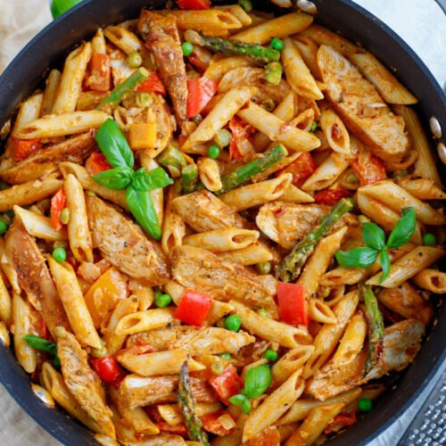

"Chipotle pasta"

Description
This creamy pasta recipe is an absolute must make dinner! Whenever we go to the Cheesecake Factory there are a few dishes we just can’t pass up. We always get the Avocado Egg Rolls and this Spicy Chicken Chipotle Pasta. Since we can’t go to the Cheesecake Factory every night, I wanted to be able to bring a little bit of the Cheesecake Factory to the house with this pasta recipe!
We just love making this simple chipotle pasta recipe because it’s a quick dinner recipe you can make any night of the week. Just over 30 minutes is all it takes to make this creamy dish. I also love how it is a complete meal all on it’s own. This creamy pasta is packed with carbs, protein, and vegetables making it the perfect all in one dinner!
Ingredients
- Pasta– penne pasta coated in a spicy chipotle cream sauce stars in this dish.
- Chipotle Cream Sauce– bell peppers, onions, garlic, asparagus, chipotle seasoning, heavy cream, and chipotle pepper sauce make this creamy chipotle sauce.
- Chicken– juicy grilled chicken in a chipotle seasoning marinade adds protein packed bites to this chipotle pasta recipe.
Steps
- To start this delicious pasta recipe begin by cooking the pasta to al dente according to the package instructions. When the pasta finished cooking, reserve 1 cup of the pasta water. Drain and set pasta aside.
- While the pasta cooks, steam the asparagus for 1 minute. Then, chop and dice the red bell pepper, orange bell pepper, and yellow onion. Mince the garlic and chop the steamed asparagus into 1 inch pieces.
- Next marinade the chicken breasts. Mix olive oil, chipotle seasoning, lemon juice, and paprika together in a small bowl. Cover both sides of the with the marinade. Grill the chicken on a grill pan or griddle until fully cooked. Remove from heat and cover to let the chicken rest.